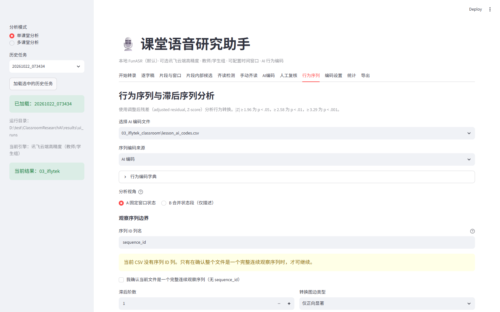
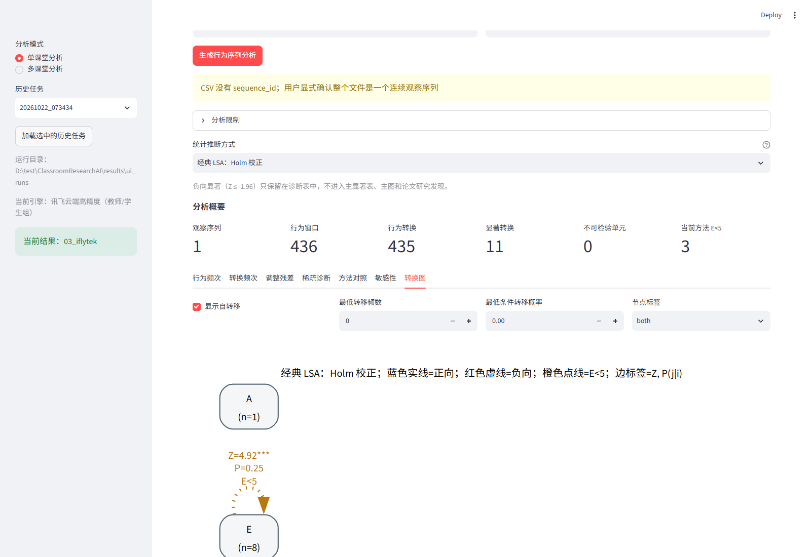
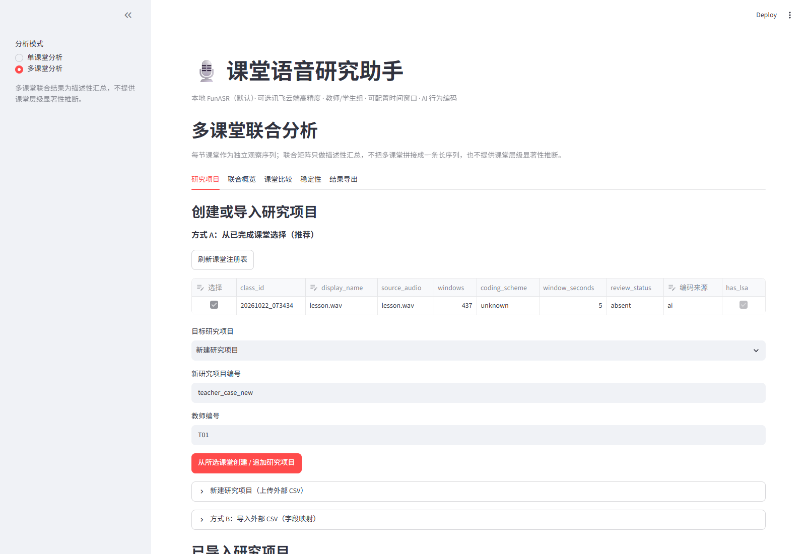
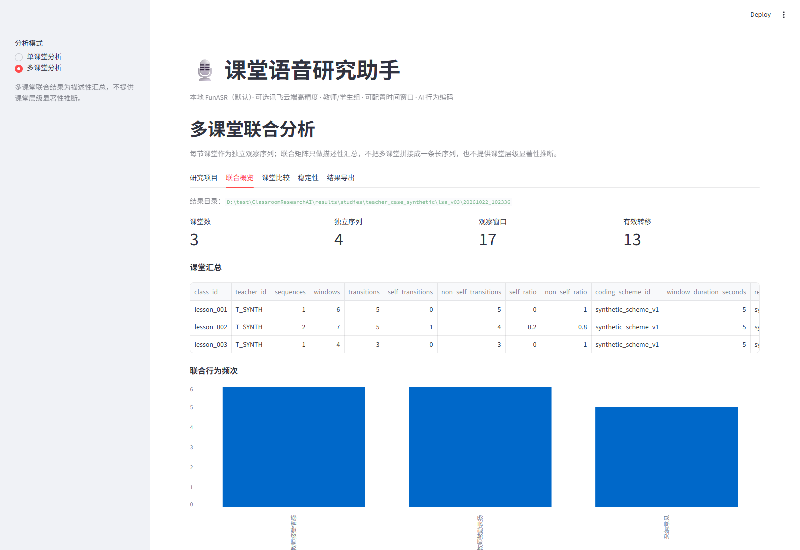

1. 开始前先看
如果你只想尽快跑通一节课，先读这一页，然后按“10 分钟快速上手”操作。
- 你有权处理这段课堂录音，并已获得学校、家长或监护人所需的授权。
- 如果要使用讯飞云端或 DeepSeek，请确认课堂音频和文本允许上传到相应服务。
- 不要把 API Key、学生姓名、家长联系方式等敏感信息放进截图、报告或公开仓库。
- 行为编码：给一个 5 秒课堂窗口标一个主行为，例如“讲授”“提问”“学生应答”。
- 逐窗口编码：每个 5 秒窗口一行，是 LSA 的输入。
- LSA：滞后序列分析，用来研究“一个行为后面更容易出现什么行为”。
- 多课堂：把多节课分别计算转移，再做描述性汇总和比较，不是把多节课拼成一条长录音。
2. 系统能做什么、不能做什么
已经可以做
- 上传音频并转录为逐字稿；
- 人工修改逐字稿、说话人和片段；
- 用 DeepSeek 对 5 秒窗口做行为编码；
- 人工复核 AI 编码并计算一致率；
- 生成固定窗口的 LSA 频次、概率、残差和转换图；
- 建立多课堂研究项目，做联合描述、课堂比较、稳定性和 LOCO；
- 导出 CSV、HTML、SVG、PNG。
目前不能直接做
- 不能直接在界面上传 MP4/MOV 视频；需要先把视频转成音频。
- 不能一次批量转录多个视频；每节课单独处理。
- AI 编码不是全自动流水线的一部分，需要你在“AI编码”页手动运行。
- 多课堂统计目前是描述性汇总，不提供课堂层级显著性检验。
- 不提供 SNA、ENA、复杂多层模型或因果推断。
如果只有视频，可先在外部用 ffmpeg 提取音频：
ffmpeg -i lesson.mp4 -vn -ac 1 -ar 16000 lesson.wav然后在“开始转录”页上传 lesson.wav。
3. 安装与启动
3.1 目录
项目根目录示例：
D:\test\ClassroomResearchAI主要目录：
| 路径 | 用途 |
|---|---|
my-project/ | 应用代码、虚拟环境和配置 |
my-project/.venv/ | Python 虚拟环境 |
models/ | 本地 ASR、VAD、声纹、标点模型 |
results/ui_runs/ | 单课堂处理结果 |
studies/ | 多课堂研究项目和课堂注册表 |
results/studies/ | 多课堂分析结果 |
coding item/ | 默认编码体系和 Prompt 文档 |
3.2 配置 API Key
在 my-project/.env 中配置：
IFLYTEK_APP_ID=你的讯飞AppID
IFLYTEK_API_KEY=你的讯飞APIKey
IFLYTEK_API_SECRET=你的讯飞APISecret
deepseek_api_key=你的DeepSeekKey3.3 启动界面
- 双击
my-project\start_ui.bat。 - 等待命令行出现本地地址，通常是
http://localhost:8501。 - 浏览器打开该地址。
- 第一次运行会加载模型，可能比之后慢很多。
4. 10 分钟快速上手
- 启动 UI，左侧选择“单课堂分析”。
- 在“开始转录”页上传一节课的音频。
- 保持默认：时间片段 5 秒、统计窗口 5 分钟；首次可关闭热词和纠正表。
- 点击“开始处理”，等待转录完成。
- 打开“逐字稿”和“片段与窗口”，快速检查文本和说话人。
- 如果文本有错，在“片段与窗口”修改并保存。
- 到“编码设置”确认编码体系和 Prompt；或使用默认文档。
- 到“AI编码”选择窗口 CSV，点击“开始 AI 编码”。
- 到“人工复核”抽查或修改编码，保存并查看一致率。
- 到“行为序列”查看频次、转换图和报告。
5. 单课堂完整教程
5.1 选择识别引擎
“开始转录”页顶部有“识别引擎”：
| 模式 | 适合什么情况 | 代价/限制 |
|---|---|---|
| 本地 FunASR（默认） | 离线、隐私敏感、没有 API 额度 | 需要本地 GPU；速度取决于电脑 |
| 讯飞云端高精度 | 希望文字更准，允许上传音频 | 需要讯飞 Key、网络和额度；不保留单个学生编号 |
5.2 上传音频与参数
- 一次只上传一节课音频。
- 推荐 16 kHz、单声道 WAV；其他格式会由 ffmpeg 处理。
- 时间片段：建议 5 秒。这个值决定窗口长度，后续最好保持一致。
- 统计窗口：建议 5 分钟，用于生成 5 分钟统计表。
- 教师说话人编号：默认
S01。 - 预设说话人数：本地模式可设 9；不确定就设 0。
5.3 转录完成后的检查
结果会保存在：
results/ui_runs/<运行编号>/建议按顺序看：
- 逐字稿：通读是否漏句、错词、说话人错位。
- 片段与窗口：检查 5 秒窗口的
窗口长度_s和有效语音_s。窗口长度应始终是 5 秒，有效语音可以小于 5 秒。 - 统计：看教师/学生占比是否大致合理。
5.4 人工修订逐字稿
在“片段与窗口”的“说话人片段”表中可以修改：
- 说话人编号；
- 角色；
- 文字内容。
修改后点击“保存修改并重新生成”。系统会生成备份，例如：
lesson_segments_before_edit.jsonl6. AI 行为编码
AI 编码不是转录流程自动完成的，需要单独进入“AI编码”页。
6.1 先准备编码体系与 Prompt
到“编码设置”页：
- 上传编码体系文档（.docx / .txt / .md）；
- 上传编码 Prompt（.docx / .txt / .md）；
- 点击“保存上传文件并设为当前”；
- 在预览区确认内容没有被截断或读错。
默认文档位于：
coding item/小学习作课程编码系统.docx
coding item/AI课堂行为编码+prompt.docx6.2 选择窗口文件
“AI编码”页会让你选择固定窗口 CSV。常见选择：
| 文件 | 说明 |
|---|---|
03_iflytek_classroom/lesson_window_5s_fixed.csv | 讯飞课堂部分的窗口，常用 |
03_iflytek/lesson_window_5s_fixed.csv | 包含末尾附加内容的完整窗口 |
10_phrase_split/lesson_window_5s_fixed.csv | 本地结果，含齐读后处理 |
默认会优先选择 03_iflytek_classroom。
6.3 编码设置
- 模型：默认
deepseek-chat。 - 每批窗口数：默认 60，通常不需要改。
- 前后上下文窗口数：默认 2，用于帮助模型判断行为功能。
- 调试：只编码前 N 个窗口：只用于测试，正式分析填 0。
点击“开始 AI 编码”，等待批次完成。
6.4 生成的文件
最重要的文件：
lesson_ai_codes.csv它通常位于所选窗口 CSV 的同一目录，例如：
results/ui_runs/20261022_073434/03_iflytek_classroom/lesson_ai_codes.csv同时还会生成：
lesson_ai_code_summary.csv：编码频次；lesson_ai_code_review.csv：低置信度或角色冲突；lesson_ai_code_sequence.txt：行为序列；lesson_ai_code_metadata.json：模型、窗口来源、Token 用量等。
6.5 lesson_ai_codes.csv 字段
| 字段 | 含义 |
|---|---|
window_id | 窗口编号 |
start_hms / end_hms | 窗口起止时间 |
duration_s | 窗口长度，通常 5 秒 |
speech_s | 窗口内有效语音秒数 |
dominant_role | 主要说话人角色 |
text | 窗口文本 |
code | A–P 主编码 |
code_name | 编码名称 |
confidence | High / Medium / Low |
role_conflict | AI 编码与说话人角色是否冲突 |
alternative_code | 备选编码 |
secondary_codes | 窗口内次要编码 |
reason | 编码理由 |
code、window_id 和时间字段；其他字段用于复核和解释。7. 人工复核与一致率
“人工复核”页用于把 AI 编码变成可检查的人工编码，而不是直接修改 AI 文件。
7.1 两种做法
- 全部接受再修改：点击“接受全部 AI 编码为人工初值”，然后只改不同意的地方。适合快速复核。
- 从空白开始：人工编码留空，只填写你真正检查过的窗口。适合严格复核部分样本。
7.2 保存后会发生什么
系统会生成独立文件：
lesson_human_codes.csv不会覆盖 lesson_ai_codes.csv。同时计算：
- 总体一致率；
- Cohen's κ；
- AI 高置信度子集一致率；
- 混淆矩阵；
- 不一致窗口清单。
7.3 怎么看 κ
| κ | 大致含义 |
|---|---|
| < 0 | 差 |
| 0–0.20 | 轻微一致 |
| 0.21–0.40 | 一般 |
| 0.41–0.60 | 中等 |
| 0.61–0.80 | 较强 |
| 0.81–1.00 | 几乎完全一致 |
8. 单课堂 LSA：行为序列分析
“行为序列”页把 lesson_ai_codes.csv 或人工复核编码转换成行为转移分析。
8.1 先理解分析单位
8.2 选择编码来源
- AI 编码：探索性分析，速度快；
- 人工复核（仅已复核窗口）：只使用已填写人工编码的窗口；
- 人工复核 + AI 补全：人工优先，空白处用 AI 补。
如果当前文件没有 sequence_id，需要确认它是不是一段连续观察记录。只有确认后才能继续，否则可能跨片段生成错误转移。

8.3 两种视角
| 视角 | 用途 |
|---|---|
| A 固定窗口状态 | 正式 LSA：窗口数、转移数、自转移、概率、残差、显著性 |
| B 合并状态段（仅描述） | 把连续同码合并成状态段，查看持续时间、状态段转移；不显示 p 值 |
8.4 统计推断方式
- 经典 LSA：Holm 校正：默认推荐，控制多重比较；
- 经典 LSA：BH-FDR：控制错误发现率；
- 经典 LSA：原始 p：未校正，只适合探索；
- Monte Carlo：Holm / BH：序列内随机排列零假设，不保留原始自相关。
8.5 如何读主要结果
| 表/指标 | 含义 |
|---|---|
| 行为频次 | 各编码出现多少个窗口 |
| 转移频数 | 行行为后面紧邻列行为的次数 |
| 条件转移概率 | P(j|i)=Oij/Ri，给定 i 后出现 j 的比例 |
| 期望频数 | 若没有特殊关联，理论上应出现多少次 |
| 调整后残差 Z | 实际与期望的差异，正值表示高于期望 |
| E<5 | 期望频数过低，正态近似不可靠；不等于不显著 |
| NA | 该单元不可定义，不能当作 0 |
8.6 图形筛选
图形可以筛选：显示自转移、最低频数、最低概率、节点标签、编码字典。筛选只影响图，不改变统计表。

8.7 导出报告
在行为序列页点击“生成 HTML 研究报告”，可导出包含数据单位、方法、显著转移、稀疏诊断、敏感性、限制和复现参数的 HTML。
9. 多课堂研究
左侧切换到“多课堂分析”。多课堂的目标是研究同一教师或同一研究项目下的多节课，不是把多节课拼成一条长录音。

9.1 从已完成课堂创建（推荐）
- 先完成每节课堂的转录和 AI 编码。
- 进入“多课堂分析” → “研究项目”。
- 点击“刷新课堂注册表”。
- 系统会扫描
results/ui_runs/，列出已完成的课堂。 - 勾选需要的课堂。
- 编辑显示名称；选择编码来源（AI 或已完成的人工复核）。
- 选择新建研究项目，或追加到已有项目。
- 点击“从所选课堂创建 / 追加研究项目”。
9.2 为什么需要手动确认编码来源
同一节课可能同时有：
lesson_ai_codes.csv：AI 编码；lesson_human_codes.csv：人工复核编码。
系统不会自动假设人工复核已经全部完成。只有人工复核覆盖全部窗口时，才推荐作为 human 来源；部分复核不能直接参与正式联合分析。
9.3 导入外部 CSV
外部研究者的 CSV 如果字段名不同，可使用“方式 B：导入外部 CSV（字段映射）”：
- 选择行为编码字段；
- 选择时间字段和时间类型（
start_hms或start_ms）； - 选择窗口编号、片段编号、窗口长度字段；
- 如果没有片段编号，确认文件是一段连续完整观察；
- 确认映射预览后导入。
系统会生成规范化副本，不修改你的原始 CSV。
9.4 维护已有研究项目
在“已导入研究项目”区域可以：
- 查看已加入课堂；
- 追加课堂；
- 移除课堂；
- 修改课堂显示名称；
- 重新运行联合分析；
- 打开来源课堂的单课堂分析。
移除课堂不会删除原始数据，也不会删除历史分析结果。
9.5 三种多课堂视角
| 视角 | 回答的问题 |
|---|---|
| 联合概览 | 把所有课堂的转移机会汇总后，整体行为频次和转移概率是什么？ |
| 课堂比较 | 某个转移 A→B 在不同课堂中的频次、概率和排名如何？ |
| 稳定性 / LOCO | 这个转移在多少课堂出现？去掉一节课后结论变化多大？ |
9.6 两种汇总权重
- 按转移机会加权：
Σ Ocij / Σ Rci，长课堂贡献更多转移机会。 - 课堂等权平均：每个有效课堂先算
Pc(j|i)，再平均；没有出现起始行为的课堂不参与该行平均。
两种结果可能不同，应该同时报告，而不是只挑一个。
10. 怎么看结果

10.1 推荐阅读顺序
- 先看数据质量：课堂数、窗口数、转移数、缺失值、时间顺序。
- 再看行为频次：哪些行为最常见。
- 再看条件转移概率：从某个行为后最常出现什么。
- 最后看校正后的显著转移和图形。
10.2 不要这样解释
- “显著相关”不等于“因果影响”。
- “E<5”不等于“不显著”，只表示正态近似需要谨慎。
- “多课堂都出现”不等于“统计上稳定”。
- 单课堂结果不能直接推广到所有课堂或所有教师。
- B 视角的状态段概率不是每 5 秒窗口的概率。
11. 统计概念小抄
转移频数 Oij 是什么？
在当前课堂序列中，行为 i 后紧邻出现行为 j 的次数。Lag 1 表示相邻窗口；Lag 2 表示隔一个窗口。
条件转移概率 P(j|i) 是什么？
只看出自行为 i 的转移中，有多大比例去了 j。公式是 Oij / Ri。它不是 j 在所有行为中的总比例。
调整后残差 Z 是什么？
实际频数 O 与期望频数 E 的差异，经过行/列边际和样本量调整后的标准化值。正数表示比随机期望更常出现，负数表示更少出现。
Holm 和 BH 有什么区别？
Holm 控制“至少出现一次错误拒绝”的概率，更严格；BH-FDR 控制错误发现率，通常保留更多结果。两者都不是因果检验。
Monte Carlo 在做什么？
在每条序列内部随机打乱行为顺序，保持频数和长度，重新计算转移。它回答“观察到的转移是否偏离随机排列”。它不保留原始自相关。
为什么很多结果是 NA？
当某行为从未作为起点、期望频数为 0 或分母为 0 时，调整后残差没有定义。NA 不是 0，也不是“没有关系”。
自转移是什么？
行为 i 后面仍然是 i，例如 F→F。它表示讲授、指示或学生应答的持续性。当前分析不会删除自转移。
12. 文件与目录
12.1 单课堂 run
results/ui_runs/<run_id>/
├── lesson.wav
├── settings.json
├── 03_iflytek_classroom/
│ ├── lesson_window_5s_fixed.csv
│ ├── lesson_ai_codes.csv
│ ├── lesson_ai_code_metadata.json
│ ├── lesson_human_codes.csv
│ ├── lesson_ai_human_agreement.json
│ └── behavior_sequence_v02c/
└── ...settings.json 记录音频文件名、SHA256、引擎、窗口长度等；lesson_ai_codes.csv 是行为编码主文件。
12.2 多课堂 study
studies/<study_id>/
├── study_manifest.json
└── classes/
└── <class_id>/lesson_ai_codes.csv
results/studies/<study_id>/lsa_v03/<run_id>/
├── analysis_metadata.json
├── classroom_summary.csv
├── pooled_transition_counts.csv
├── pooled_transition_probabilities.csv
├── equal_weight_transition_probabilities.csv
├── transition_stability.csv
├── leave_one_class_out.csv
└── multi_classroom_report.html12.3 课堂注册表
studies/classroom_registry.json这是系统扫描 results/ui_runs/ 得到的课堂索引。它不会修改原始 CSV。
12.4 当前项目中的示例
| 用途 | 路径 |
|---|---|
| 真实单课堂示例 | results/ui_runs/20261022_073434/03_iflytek_classroom/ |
| 单课堂 HTML 报告 | .../behavior_sequence_v02c/lesson_report_holm.html |
| 三课堂合成演示 | studies/teacher_case_synthetic/ |
| 多课堂 HTML 报告 | results/studies/teacher_case_synthetic/lsa_v03/<run_id>/multi_classroom_report.html |
| 课堂注册表 | studies/classroom_registry.json |
teacher_case_synthetic 当作真实课堂研究结果。13. 常见问题
启动后页面空白/一直加载
- 先看命令行是否仍在加载模型；
- 确认
http://localhost:8501没有被其他程序占用； - 检查
my-project/.env是否存在且格式正确。
提示缺少 API Key
- 讯飞模式需要 AppID、APIKey、APISecret；
- AI 编码需要 DeepSeek Key；
- 修改
.env后重启 UI。
AI 编码失败或编码数量不足
- 检查 DeepSeek 余额/网络；
- 确认窗口 CSV 有
window_id、text和时间字段； - 先用“只编码前 10 个窗口”做小测试。
多课堂页面看不到已完成课堂
- 确认那节课已经完成 AI 编码；
- 点击“刷新课堂注册表”；
- 检查
results/ui_runs/下是否有*_ai_codes.csv； - 缺少元数据时仍可能被发现，但编码体系会显示
unknown。
多课堂无法合并
- 检查课堂是否使用了不同编码体系；
- 检查窗口长度是否一致；
- 检查是否有重复 class_id 或重复文件；
- 检查没有 sequence_id 的课堂是否确认了连续序列。
人工复核无法作为多课堂来源
人工复核必须覆盖该课堂全部窗口。部分复核可以选择 AI 编码，或先补全复核。
图里看不到边
- 当前方法下可能没有显著转移；
- 最低频数/最低概率筛选可能太严格；
- 自转移可能被隐藏；
- 检查 E<5 的橙色点线是否因为筛选被隐藏。
“窗口长度 2.44/4.77”是什么
那不是窗口长度，而是 有效语音_s。窗口长度始终是 5 秒；有效语音会因为停顿、静音而小于 5 秒。
14. 隐私与合规
- 课堂录音可能包含未成年人声音，属于敏感数据；
- 使用本地模式时音频不离开电脑；
- 使用讯飞或 DeepSeek 时，音频/文本会发送到云端，必须获得授权；
- 不要把真实姓名直接写进编码 CSV；建议使用匿名编号；
- 导出报告前检查是否包含学生姓名、学校名称或其他可识别信息；
- 共享结果时优先共享聚合表，不共享原始音频。
15. 操作检查清单
单课堂
- 音频已获得授权；
- 窗口长度确认是 5 秒；
- 逐字稿已检查；
- 编码体系和 Prompt 是当前研究版本；
- AI 编码已生成；
- 低置信度/角色冲突已复核；
- 人工复核文件与 AI 文件没有混淆；
- LSA 报告包含统计限制。
多课堂
- 每节课是独立课堂；
- 同一课堂的多个片段有 sequence_id；
- 编码体系一致；
- 窗口长度一致；
- 选择 AI 或完整人工复核作为编码来源；
- 检查课堂注册表和 SHA256；
- 没有把合成数据混入正式研究；
- 报告明确“描述性汇总、未做课堂层级显著性推断”。
16. 学术写作模板与样例
下面不是“自动生成结论”，而是可以直接改写的论文段落模板。所有数字都应从你的实际报告和 CSV 中核对；方括号 [ ] 表示需要替换的研究信息。
- 你使用的是 AI 编码、人工复核编码，还是“人工优先 + AI 补全”？论文中必须说明。
- 你报告的是固定 5 秒窗口状态转移，还是合并后的状态段；两者不能混写。
- 显著转移只能写成“关联/偏离期望”，不能写成“导致”“促进”“证明有效”。
- E<5 的显著单元必须加限制说明，不能当作强证据。
16.1 方法部分模板：单课堂 LSA
本研究以 [学校/年级/课例名称] 的一节 [学科/课型] 课堂录像为个案，使用 ClassroomResearchAI（LSA V0.2c/V0.3.1）完成音频转录、文本校对、行为编码与滞后序列分析。首先将课堂音频按固定 5 秒窗口切分，共得到 437 个观察窗口；随后依据 [编码体系名称]，对每个窗口赋予 A–P 中的一个主行为编码。编码先由 DeepSeek 模型生成初稿，再由研究者进行人工复核；本研究最终使用的是 [AI 初编码 / 人工复核编码 / 人工优先+AI补全]。
在序列分析中，以相邻窗口构成 Lag 1 行为转移，共得到 436 次有效转移。对每个有向转移单元计算观察频数 Oij、条件转移概率 P(j|i)=Oij/Ri、期望频数 Eij=Ri×Cj/N，以及调整后残差：
Zij = (Oij - Eij) / sqrt(Eij × (1 - Ri/N) × (1 - Cj/N))多重比较采用 Holm 校正；校正族为所有具有可定义统计量的有向转移单元，共 90 个，10 个不可定义单元不参与校正。另以 10,000 次序列内随机排列进行 Monte Carlo 检验，随机排列保持每条序列的长度与编码频数不变。所有分析同时保留原始窗口结果，不以合并状态段结果替代原始结果。
如果论文还报告多课堂分析，请把下一段接在方法部分，并明确多课堂部分仅做描述性汇总。
16.2 结果部分样例：当前真实单课堂
以下数字来自当前项目中的真实课堂示例 20261022_073434/03_iflytek_classroom，可以作为改写骨架；正式论文应替换为你自己的课例。
该课堂共切分为 437 个 5 秒窗口，产生 436 次 Lag 1 行为转移，实际观察到 10 类行为。行为频次最高的是“应答（被动反应）”（J，133 次，30.43%），其次为“指示”（G，86 次，19.68%）、“提问开放性问题”（D，60 次，13.73%）和“讲授”（F，58 次，13.27%）。自转移 163 次，占 37.39%；非自转移 273 次，占 62.61%，说明课堂行为序列中存在一定程度的状态持续性。
在经典 LSA 中，全部 90 个可检验单元进入 Holm 校正。按照本研究预先规定的规则，只有正向显著转移进入主结果；负向显著（Z ≤ -1.96）仅保留在诊断表中，不作为研究发现解释。校正后共有 9 条正向转移达到统计显著。其中，六种方法共同识别出 5 条转移：F→F、G→G、I→I、J→B、J→J。具体而言，F→F 的观察频数为 27，条件转移概率为 0.47，调整后残差为 8.01；J→J 的观察频数为 70，条件转移概率为 0.53，调整后残差为 6.65；J→B 的观察频数为 20，条件转移概率为 0.15，调整后残差为 4.46。
从解释上看，本课堂的序列结构主要表现为教师讲授/指示的持续，以及学生被动应答后的继续应答和教师鼓励。上述结果描述的是本课堂中的正向行为关联，不构成教学有效性或因果关系的证据。
expected_lt_5 标记，并说明其解释应更谨慎。负向显著不进入主结果，但仍保留在诊断表中供审计。16.3 讨论部分模板
从行为序列角度看，本课例中教师讲授（F）和指示（G）具有较明显的自转移，反映出课堂在较长时段内保持教师主导的活动结构；学生被动应答（J）之后较常出现教师鼓励（B），同时 J→J 也较突出，说明学生连续应答与教师即时反馈可能构成该课堂的重要互动片段。结合课堂语境，这可能与本节课以教师讲解、点名回答和集体朗读为主的组织方式有关，但仅凭行为序列不能证明这种教学组织方式带来了更高的学习效果。
因此，本文将上述模式视为该课例的描述性互动特征，而非教师教学能力的评价结论，也不将其外推为所有同类课堂的普遍规律。
16.4 局限性部分模板
本研究存在以下限制。第一，分析单位为固定 5 秒窗口中的主行为编码，而非具有自然起止时间的行为事件；连续相同编码被保留为状态持续，未合并为事件序列。第二，当前仅分析一条课堂观察序列，结果不能直接推广到其他课堂、其他教师或更广泛的教学群体。第三，相邻窗口共享观察时段，转移之间并非完全独立；虽然使用了 Holm 校正和序列内随机排列，但仍不能等同于考虑了全部课堂层级依赖的推断。第四，部分转移单元的期望频数较小，正态近似的可靠性有限；Monte Carlo 零假设也不保留原始序列的自相关结构。第五，AI 编码仅作为辅助，人工复核的覆盖范围有限，编码一致性仍可能影响结果。最后，显著转移只表示观察频数偏离随机期望，不能解释为因果关系或教学效果。
16.5 多课堂方法模板
多课堂分析以 [8] 节课堂为独立观察序列，每节课堂分别按固定 5 秒窗口生成行为编码，并在课堂内部的独立观察片段中计算 Lag 1 转移。设第 c 节课的转移矩阵为 Tc，联合转移矩阵为 Ttotal = Σc Tc；联合条件转移概率按转移机会加权：
P_pooled(j|i) = Σc Ocij / Σc Rci同时计算课堂等权平均：
P_equal(j|i) = mean_{c: Rci > 0} Pc(j|i)没有出现起始行为 i 的课堂不参与该行平均。多课堂结果用于描述性比较、跨课堂稳定性和 Leave-One-Class-Out 敏感性分析；本阶段不将多课堂数据拼接为一条长序列，也不报告经过课堂层级依赖调整的显著性检验。
16.6 多课堂结果模板（合成演示，仅作格式示例）
下面的数字来自项目的三课堂合成演示数据，不是真实课堂研究结论。它只展示论文中如何报告 pooled 与 equal-weight 两种汇总。
三课堂合成演示数据包含 3 节课堂、4 条独立观察序列、17 个观察窗口和 13 次 Lag 1 转移。联合转移频数矩阵如下：
A B C
A 0 3 2
B 1 1 3
C 2 1 0联合条件概率与课堂等权概率被分别计算并报告。A→B 的 pooled 概率为 0.60，而课堂等权概率为 0.583；A 行只有 2 节课堂出现起始行为 A，因此等权平均的有效课堂数为 2。两种结果存在差异，说明课堂长度和转移机会会影响汇总结果，不能只报告其中一种。该演示只用于验证多课堂工作流，不用于推断真实教师的教学模式。
16.7 图表标题模板
- 表题：固定 5 秒窗口下的行为频次与条件转移概率（Lag 1，N=436）。
- 图题：Holm 校正后正向显著行为转移图；橙色点线表示期望频数小于 5。负向显著不进入主图。
- 表注：E<5 的单元以 * 标记；NA 表示调整后残差不可定义；显著性基于双侧正态近似并经 Holm 校正。
16.8 改写时的“不要写”清单
- 不要写“证明了教师提问能提高学生成绩”——当前数据没有成绩或因果识别。
- 不要写“所有优秀教师都呈现该模式”——当前只有一个课例或少量课堂。
- 不要写“AI 编码完全客观”——AI 编码需要人工复核和一致性报告。
- 不要写“Monte Carlo 检验保留了课堂自相关”——当前零假设是序列内随机排列，不保留自相关。
- 不要把 B 视角的状态段概率写成“每 5 秒转移概率”。